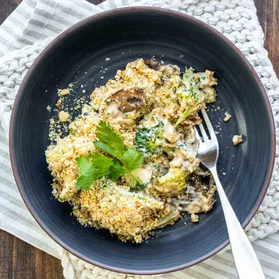

Vegan Broccoli Casserole

Ingredients
- 1 cup chopped sweet or yellow onion
- 2 cups sliced mushrooms (, about 8 ounces)
- drizzle of olive oil (, or broth if you don’t use oil)
- 1 pound fresh broccoli (, chopped into larger pieces (see note)
- 3 cups vegan Alfredo sauce (, or cream sauce of choice (see note)
- ½ teaspoon sea salt
- ¼ teaspoon ground black pepper
- ½ cup vegan parmesan
- ½ cup breadcrumbs (, gluten-free if needed)
- 2 teaspoons garlic powder
- 2 teaspoons dried parsley
- ½ teaspoon sea salt
Steps
- Preheat oven to 350 degrees F / 175 C.
- Sauté the onions with oil or broth until soft. Abut 5 minutes.
- Add the mushrooms, salt and pepper and sauté for 1-2 minutes.
- Add the broccoli, saute for about 5 minutes until browning. If you want it softer, then cover and cook to steam and soften more for 2-3 minutes.
- Take off the heat and stir in the cream sauce.
- Make the topping by mixing all ingredients in a bowl.
- Pour into a square baking dish and cover with the topping mix.
- Bake for 15-20 minutes, until the sauce is bubbling and the topping is slightly browning.
- Serve!
Recipe by Anjali Shah, from The Picky Eater. Saved here for personal use; the original has the full notes, tips and photos. Open original